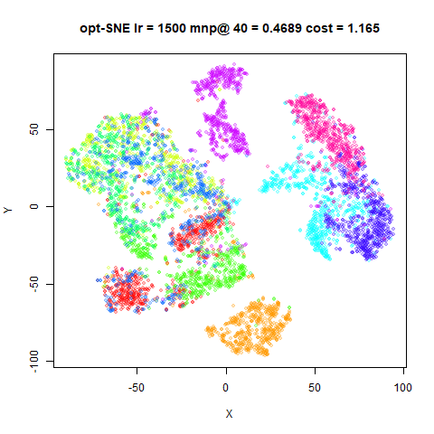
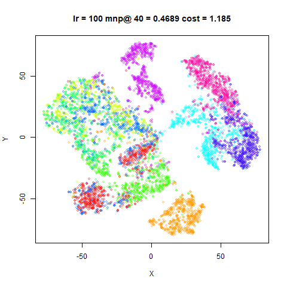
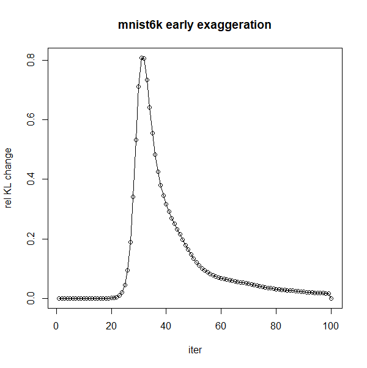
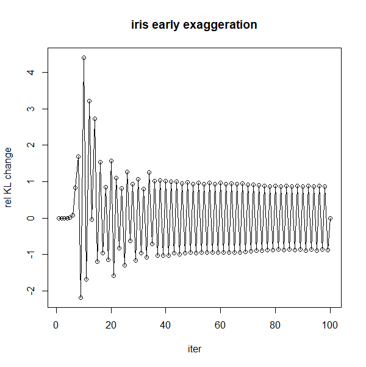
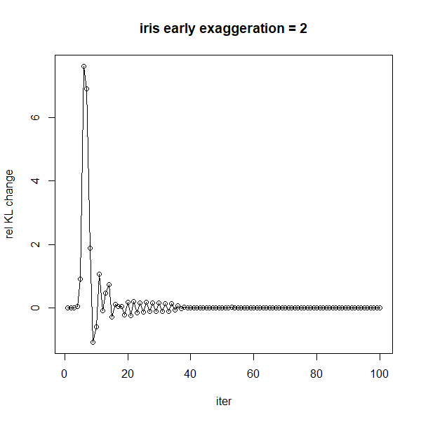
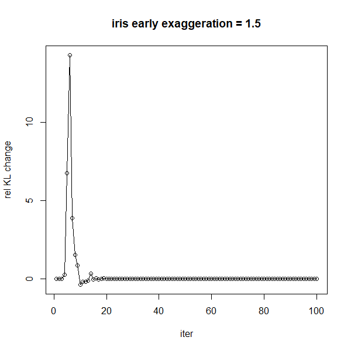
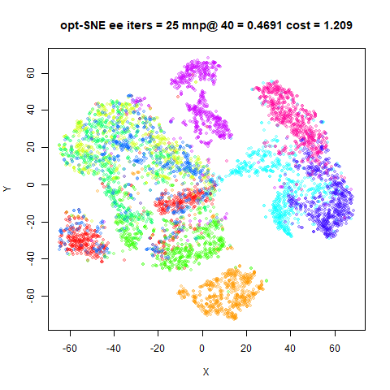
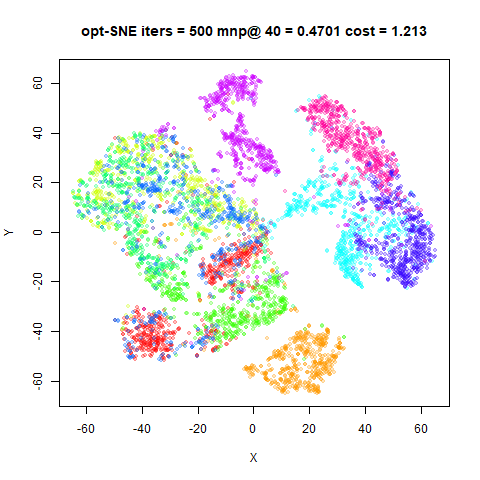
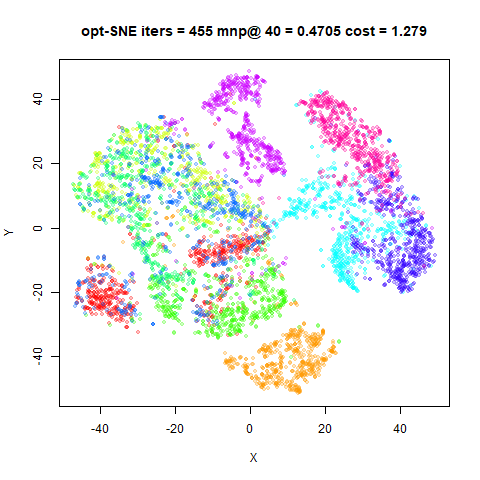
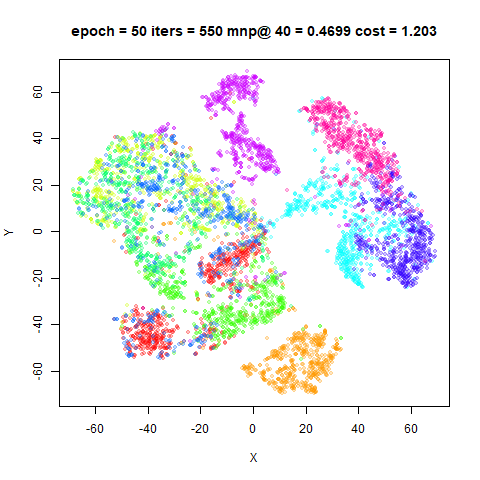

This article retains its original experiments and examples. For current package usage, see the usage guide.
For large datasets, particularly those using biological data, Belkina and co-workers came up with a series of guidelines about how to better separate clusters, which is part of their opt-SNE code. There are three main suggestions:
The learning rate (
etainsmallvis) should be data dependent, and can be much larger than the usual defaults of 100-250 for large datasets. They recommend a value of N / \alpha where N is the number of objects in the dataset, and \alpha is the early exaggeration factor (usually 12 for larger datasets).Early exaggeration may need to be run for substantially longer than usual. Rather than stop early exaggeration after a fixed number of iterations, they suggest monitoring the relative rate of change of the KL divergence, (KL_{i-1} - KL_{i}) / KL_{i-1}, and terminate early exaggeration after it reaches a maximum. Normal optimization then proceeds for the rest of the iterations available. In the paper, an example is given where optimal results were obtained after 750 iterations of early exaggeration, followed by another 750 iterations of standard optimization.
Because early exaggeration can last a longer than usual, it might be tempting to keep the ratio of early exaggeration iterations to standard optimization iterations, e.g. 75%-90% of the total number of iterations should be non-exaggerated. But because the early exaggeration is extended, this would in turn lead to a very long run time for the standard optimization. Instead, the authors suggest monitoring the relative tolerance of the KL divergence, and terminate the run when KL_{i-1} - KL_{i} < KL_{i} / 10000.
There is no suggestion that these changes are necessary or optimal for smaller datasets, but it would be nice if they were or at least they did no harm.
The first and last of these are easy to implement. In fact,
smallvis has had early stopping for ages, so we can follow
the author’s guidelines for early stopping with
tol = 1e-4, epoch = 1.
Looking for a maximum of the relative rate of change during early exaggeration is a bit more work, but achievable.
We’ll consider each change in turn, before combining them at the end.
Datasets
See the Datasets page.
Learning Rate
Settings
To use the opt-SNE learning rate settings, use
eta = "optsne" rather than passing a fixed value. This will
adapt based on exaggeration_factor and the size of the
dataset. If verbose = TRUE, the value used is logged to
screen.
Every other setting will be pretty standard. For comparison, we’ll
repeat these results with a fixed eta = 100, which matches
that used in the original t-SNE
paper.
Results
Left hand plots are those which use eta = "optsne". The
resulting value of the learning rate is shown in the plot title. The
right hand plots are for a fixed eta = 100.
fashion6k
 |
 |
Results are not very sensitive to the initial learning rate.
oli shows no difference, because the opt-SNE settings
choose eta = 100. iris and s1k
divergences are slightly higher with eta = "optsne". For
the other datasets, the divergences are all slightly lower, with the
largest effect for the larger datasets, but even though the learning
rate is an order of magnitude higher than the default for these
datasets, the cost is less than 2% lower after 1000 iterations. The
neighbor preservation values don’t show much difference either.
For the rest of the comparisons, we’ll use the
eta = "optsne" results.
Early Exaggeration
As a reminder, Belkina and co-workers suggest examining the relative rate of change of the KL divergence during early exaggeration and terminating the exaggeration phase after the relative rate of change reaches a maximum.
One objection to this is that it requires calculating the KL
divergence at each iteration, which isn’t necessary during usual
optimization. But there is an additional slight problem in that some
datasets show quite noisy behavior during early exaggeration. Below is a
plot of the relative KL change during early exaggeration for two
datasets. On the left is mnist6k, which is quite
well-behaved, and on the right, iris, which is not:
 |
 |
The mnist6k example uses a low learning rate of
eta = 100 (much lower than then opt-SNE settings), and
iris is using the eta = "optsne" setting which
results in a fairly low learning rate of 37.5, but using
eta = 100 doesn’t make a difference either and nor does
reducing the momentum. The effect is substantially
reduced by reducing the exaggeration_factor. Here are the
results for exaggeration_factor = 2 and
exaggeration_factor = 1.5:
 |
 |
I see a similar pattern with the typical standard t-SNE random
layout. But at least for iris, the effect of early
exaggeration doesn’t seem to do much to the final cost or layout. The
noisy change in relative KL difference seems to be a fact of life for
some datasets, and I saw similar patterns with oli.
At any rate it seems like these issues or something like them are also known to the authors, as the current (as of February 2019) implementation of opt-SNE is slightly more conservative in terminating the early exaggeration, as the procedure has been modified to:
- wait 15 iterations before monitoring the relative rate of change of KL.
- calculate the relative rate of change every three iterations, rather than every iteration.
- only terminate early exaggeration after the relative rate of change of KL has been observed to decrease three times.
Settings
The above is implemented in smallvis by specifying the
ee_mon_epoch parameter. If specified, this value replaces
that of epoch during early exaggeration, e.g. if
ee_mon_epoch = 3 then the epoch code is run every 3
iterations, including running any callbacks and logging to console. The
relative tolerance criterion is turned off, however, instead using the
detection of the maximum of the rate of change. Additionally, the
ee_mon_wait parameter controls how long to wait before
checking the rate of change, and ee_mon_buffer specifies
the number of times the rate of change check is passed but assumed to be
a false positive due to noise. Setting ee_mon_buffer = 2
gives the default opt-SNE value, where early exaggeration is terminated
only on the third occurrence.
iris_ee_tol <- smallvis(
iris,
perplexity = 40,
eta = "optsne",
Y_init = "spca",
exaggeration_factor = 4,
ee_mon_epoch = 3,
ee_mon_wait = 15,
ee_mon_buffer = 2
)Results
Left hand images are the results with the early exaggeration being
monitored. The iteration at which the early exaggeration was stopped is
given in the title of the image. The right hand images are the results
from the previous section with eta = "optsne".
fashion6k
 |
Rather than extending the exaggeration time, for all the datasets studied, the effect of the exaggeration monitoring is to terminate it much earlier than the full 100 iterations. No dataset uses exaggeration for more than 33 iterations.
Nonetheless, the results aren’t hugely affected. The final
divergences are in general a little bit elevated, but there’s not a huge
effect on either the neighbor preservation or the visual quality of the
embedding. The mnist6k results are slightly different: the
result with the ‘4’ cluster (in green at the bottom) is split by the ‘9’
cluster (magenta). This embedding turns up now and again with various
t-SNE settings and seems to be nearly as stable as the un-split version
in terms of KL divergence, but is obviously less appealing.
As early exaggeration is only 10% of the run time of the optimization, stopping after 30 iterations doesn’t save a huge amount of time, and doesn’t seem to help the embedding quality, at least if you initialize with scaled PCA.
Early stopping
Early stopping applies to the standard, un-exaggerated part of the optimization. Like with early exaggeration, the current implementation of opt-SNE slightly modifies the strategy given in the paper:
- waits 15 iterations before attempting to stop.
- checks every 5 iterations, rather than every iteration.
- the tolerance check is |KL_{i-1} - KL_{i}|
/ 5 < KL_{i} / 5000, i.e. the relative tolerance check has
been loosened from
1e-4to2e-4(i.e.1 / 5000). This can be changed by the user, but5000is the default.
This has been present in smallvis for a while, but by
default the tolerance is set sufficiently low (1e-7) that
you are unlikely to stop early with most datasets.
Settings
We’ll compare the tolerance used by the current version of opt-SNE, rather than the version given in the paper, but the difference won’t be too large. We’ll go back to 100 iterations of early exaggeration with no early stopping possible during that period of the optimization.
tol_wait = 15 sets the number of iterations to wait
during standard optimization before allowing early stopping. In practice
I don’t think I’ve seen any possibility of convergence occurring so
early after turning off early exaggeration, but it’s included for
completeness.
iris_early <- smallvis(
iris,
perplexity = 40,
eta = "optsne",
Y_init = "spca",
exaggeration_factor = 4,
epoch = 5,
tol = 2e-4,
tol_wait = 15
)Results
Early stopping results are on the left. The number of iterations used is given in the title. This includes the 100 iterations used in early embedding. The results on the right use all 1000 iterations.
fashion6k
 |
Early stopping definitely saves on iterations: no embedding runs for more than 555 iterations. And there’s no real difference to the neighbor preservation or the visual quality of the layouts. Possibly there are some local fine detail that’s different that isn’t readily visible from the images as shown. If you don’t care about that, then it seems like early stopping is a good idea.
Full opt-SNE
Finally, let’s put it all together: combining the dataset-dependent learning rate, early exaggeration monitoring and early stopping.
Settings
iris_optsne <- smallvis(
iris,
perplexity = 40,
eta = "optsne",
Y_init = "spca",
exaggeration_factor = 4,
ee_mon_epoch = 3,
ee_mon_wait = 15,
ee_mon_buffer = 2,
epoch = 5,
tol = 2e-4,
tol_wait = 15
)Results
The full opt-SNE results are on the left. Again the total number of iterations is given in the title of the plot. The comparison on the right is from the previous section: full 100 iterations of early exaggeration and then early stopping.
fashion6k
 |
Combining the early exaggeration monitoring and the early stopping
leads to even fewer iterations than just early stopping alone in all
datasets except coil20, which takes an extra 100 iterations
to stop.
Otherwise, these results are quite similar to the results from using
only early stopping. The mnist6k results show the ‘4’
cluster split by the ‘9’ cluster, just as with the early exaggeration
monitoring-only run.
Longer Epochs
Using the opt-SNE settings involves epochs of 3 and 5 iterations,
which is much shorter than the smallvis default of 100, and even BH
t-SNE normally only logs data every 50 iterations. If we use
epoch = 50, can we get most of the speed up benefit of the
opt-SNE settings? The main effect will be to prevent early stopping of
the early exaggeration, but that doesn’t seem like a big problem,
because the innovation of opt-SNE is to allow early exaggeration to go
on for a lot longer than usual if needed, but for all the datasets
looked at here, the only effect is to stop early exaggeration a lot
earlier and it’s already a small fraction of the proportion of
the number of iterations.
Settings
iris_epoch50 <- smallvis(
iris,
perplexity = 40,
eta = "optsne",
Y_init = "spca",
exaggeration_factor = 4,
epoch = 50,
tol = 2e-4
)Results
Results with using an epoch of 50 and no early exaggeration
monitoring are shown on the left. The images on the right are of those
from the early stopping results. The only difference between the two is
that the images on the right used an epoch = 5, and
therefore calculate the KL divergence and tolerance checks ten times
more often.
fashion6k
 |
These results are very similar to each. By checking the tolerance
less often we end up running for an extra 35-55 iterations, except for
s1k which takes 100 more iterations.
It should be noted that there is a non-negligible cost to calculating
the KL divergence more often. For mnist6k and
fashion6k, setting epoch = 5 did increase the
effective time per iteration by around 15%, even when the visualization
callback was turned off. Obviously, the point at which this extra cost
is worth it due to the optimization stopping earlier will depend on the
speed of your hardware and the dataset size.
Conclusions
The opt-SNE settings are designed for very large datasets, so it’s
perhaps not surprising that some of the recommendations don’t have a big
effect for the small datasets that smallvis can handle.
Setting eta = "optsne" seems mildly helpful for larger
datasets. It may give a learning rate that’s too low for small datasets,
however.
The early exaggeration monitoring wasn’t that helpful for the datasets studied here: it reduced the time spent in early exaggeration, but it wasn’t that long to begin with. None of the datasets tested here indicated that more time in early exaggeration than 100 iterations was needed, so you may as well leave it at that default.
Early stopping via the tol setting is definitely
helpful. With the opt-SNE setting of tol = 2e-4, all of the
tested datasets had converged by iteration 600 at the latest, rather
than terminating at the default of 1000. Using the opt-SNE epoch
settings of 3 (for early exaggeration) and 5 does seem excessive,
though. Probably a setting of between 25-50 is a better trade off
between early stopping opportunity and KL divergence calculation
time.
Up: Documentation Home.